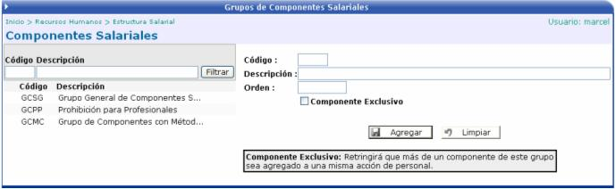
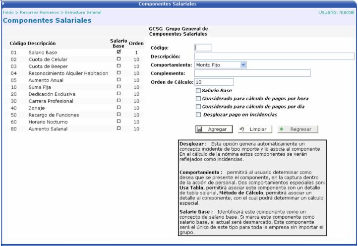

, que aparecerá
en la pantalla anterior al hacer click sobre un grupo:
, que aparecerá
en la pantalla anterior al hacer click sobre un grupo:En esta opción como primer paso se debe de crear una relación o un grupo de componentes. Se tiene que ingresar un código, una descripción y un orden. Si se activa el check Componente Exclusivo ese grupo se restringirá a que más de un componente de este grupo sea agregado a una misma acción de personal:

Luego de creado el grupo, se procede a
ingresar los componentes presionando el botón , que aparecerá
en la pantalla anterior al hacer click sobre un grupo:

Para ingresar los componentes al grupo, es necesario agregar un código, una descripción, un comportamiento y complemento de cuenta.
Comportamiento: permitirá al usuario determinar como desea que se presente el componente, en la captura dentro de la acción de personal. Dos comportamientos especiales son:
Usa Tabla: permitirá asociar este componente con un detalle de tabla salarial,
Método de Cálculo: permitirá asociar un detalle al componente, con el cual podrá determinar un cálculo especial.
Salario Base: identificará este componente como un concepto de salario base. Si marca este componente como salario base, y hay otro que esta marcado como salario base, el actual componente será desmarcado. Este componente será el único de este tipo para toda la empresa sin importar el grupo.
Si hay algún componente que se le haya
asociado el comportamiento Método
de Cálculo, en la pantalla anterior se mostrará el botón de 
Esta ventana permite asociar un detalle al componente mediante el cual se puede determinar que el componente se comportará como un multiplicador o un porcentual.
Se ingresa una fecha de inicio, un comportamiento, un valor o un porcentaje, un tope, un tipo y si aplica, se activa el check: Se basa en otro puesto / tabla para realizar el cálculo:

Comportamiento: Este campo permitirá al usuario determinar como desea que se calcule el componente en la captura dentro de la acción de personal. Si el componente usa tabla el único comportamiento permitido es multiplicador y usando como valor el registrado en la tabla salarial, por lo que no se permite capturar el valor.
Valor o Porcentaje: si el comportamiento es multiplicador y no utiliza una tabla salarial, este valor será multiplicado por las unidades ingresadas en la acción de personal. Si fuera porcentual, este será el porcentaje con el que se pagará con referencia al salario base de la persona.
Tope: porcentaje máximo que pagará con referencia en el salario base de la persona.
Tipo: identificará si el componente es una anualidad, sobresueldo, o de otra clase.
Se basa en otro puesto / tabla para realizar el cálculo: permitirá que el componente se pague con el salario base de un puesto específico, sin importar el de la persona. Aquí se debe de asociar un puesto y la tabla salarial a asociar para realizar el pago.